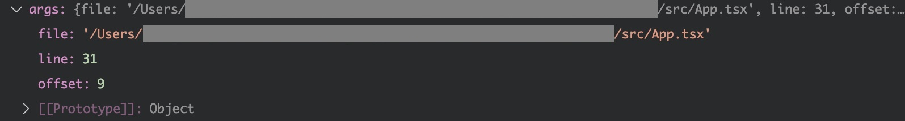
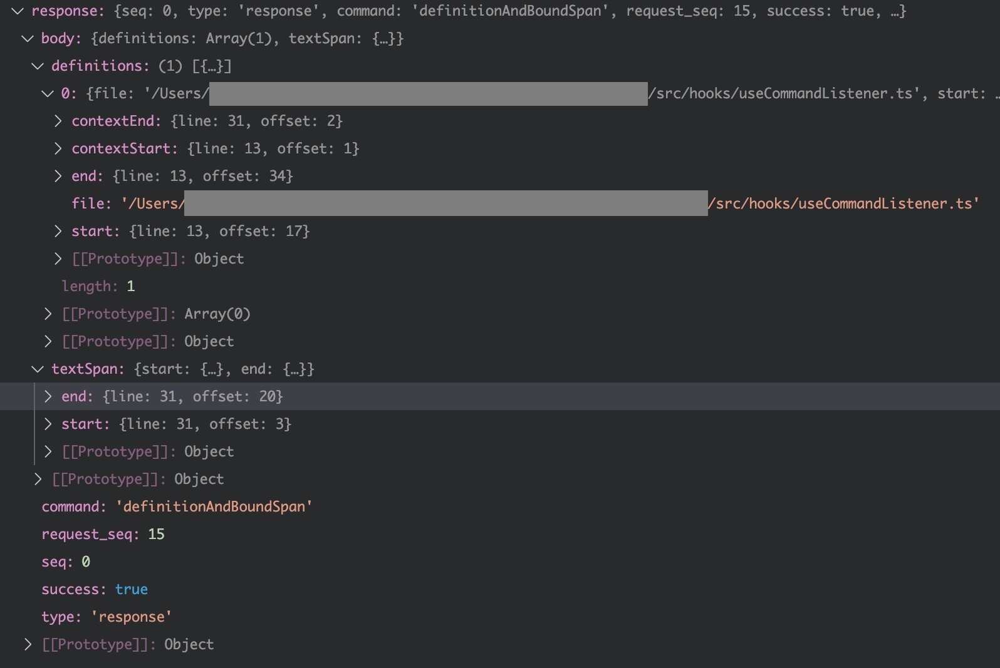

Visual Studio Code中有一项对开发非常有用的功能：Go to Definition，可以跳转到变量或者函数的定义。对于Java等强类型语言来说，这是一个IDE基本的功能。而对于前端，主要使用的是弱类型语言Javascript，受限于语言特性，Go to Definition并不能很好地实现。近年来，前端逐渐在从Javascript转向Typescript，这项功能就显得尤为有用了。
那么，Visual Studio Code 是如何实现这个功能的呢？最近在做VSCode插件，有用到相关api，正好了解了一下相关实现。

先用简单描述一下整个过程：VSCode启动时，会启动一个Typescript Language Server的进程，我们简称为tsserver进程，所有的语言解析逻辑都在这里了。VSCode主进程通过和这个tsserver进程通信，获得解析代码的能力，对于Go to Definition这个功能来说，获得的就是Definition的代码位置。有了代码位置，再辅以自己的文档切换与滚动，就实现了整个功能。
接下来对上面的过程一一详述
VSCode可以支持许多语言的开发，这里『支持』是指Go to Definition，Find Reference等处理代码的功能。这些支持都离不开language server protocol，简称LSP。这是微软这个IDE大厂提出的一个协议，用来使任意IDE可以支持任意语言。 传统的IDE通过在IDE内部实现对语言的解析，才能有Go to Definition等功能。而对于各IDE或者编辑器作者来说，都需要自己实现一遍这些语言解析。程序员的天性是避免重复，为了解决这个问题，LSP被提出了。LSP协议包含客户端与服务端两端，客户端由IDE或者编辑器实现，而LSP服务端就由各个语言开发者提供，每个语言只需要提供一份服务端即可，所有IDE或者编辑器都可以按照相同的LSP协议来调用服务端。
VSCode的图很好的解释了这个关系：

Typescript和VSCode都是由微软主导开发的，对LSP的支持自然是非常积极的。在Typescript中已经实现了Language Server。而VSCode也自带了一个插件typescript-language-features，来调用tsserver。
接下来我们看看VSCode是如何调用tsserver的。
typescript-language-features插件（下面简称ts插件）内包含了一个TypeScriptServiceClient类，这就是LSP的客户端了。这个客户端不仅包含了与服务端通信，还负责启动客户端。我们看下启动服务的代码：
private startService(resendModels: boolean = false): ServerState.State {
...
const handle = this.typescriptServerSpawner.spawn(...),
});
...
}
可以看到，这里调用了typescriptServerSpawner的spawn方法来启动tsserver进程，我们继续看spawn的定义：
public spawn(
version: TypeScriptVersion,
capabilities: ClientCapabilities,
configuration: TypeScriptServiceConfiguration,
...
): ITypeScriptServer {
...
const serverType = this.getCompositeServerType(version, capabilities, configuration);
...
switch (serverType) {
case CompositeServerType.SeparateSyntax:
case CompositeServerType.DynamicSeparateSyntax:
{
const enableDynamicRouting = !shouldUseSeparateDiagnosticsServer && serverType === CompositeServerType.DynamicSeparateSyntax;
primaryServer = new SyntaxRoutingTsServer({
syntax: this.spawnTsServer(TsServerProcessKind.Syntax, ...),
semantic: this.spawnTsServer(TsServerProcessKind.Semantic, ...),
}, delegate, enableDynamicRouting);
break;
}
case CompositeServerType.Single:
{
primaryServer = this.spawnTsServer(TsServerProcessKind.Main, ...);
break;
}
case CompositeServerType.SyntaxOnly:
{
primaryServer = this.spawnTsServer(TsServerProcessKind.Syntax, ...);
break;
}
}
...
return primaryServer;
}
这里有许多server类型，其中，Syntax是仅语法解析，Main，Semantic都是包含语法和语义的解析。简单说一下语法和语义的区别，语法分析一般针对单条语句，而语义分析会包含上下文，举例来说，var a = 1 b = 2 我们知道是错误的，这就是通过语法分析解析出来的。而const a = 1; a.split('.')是错误的，number类型没有split方法，这是通过语义分析得出的。
然后我们继续深入看一下spawnTsServer
private spawnTsServer(...): ITypeScriptServer {
...
const process = this._factory.fork(version, args, kind, configuration, this._versionManager);
...
return new ProcessBasedTsServer(
...
process!,
...);
}
可以看到，这里fork了process，并且传给ProcessBasedTsServer构造函数，先看下fork是如何实现的。VSCode是可以运行在浏览器和Electron上的，所以这里的fork有两个实现，分别在WorkerServerProcess和ElectronServiceProcessFactory内，浏览器通过Worker启动，而Electron通过child_process启动。我们以electron为例继续往下看。
export class ElectronServiceProcessFactory implements TsServerProcessFactory {
fork(...): TsServerProcess {
let tsServerPath = version.tsServerPath;
...
const useIpc = version.apiVersion?.gte(API.v460);
...
const childProcess = child_process.fork(tsServerPath, runtimeArgs, {
...
stdio: useIpc ? ['pipe', 'pipe', 'pipe', 'ipc'] : undefined,
});
return useIpc ? new IpcChildServerProcess(childProcess) : new StdioChildServerProcess(childProcess);
}
}
这里调用Node.js基础库child_process来fork子进程。从最后一行可以看出，这里支持两种进程通信方法IPC和STDIO，使用哪一种取决于TypeScript的版本。IpcChildServerProcess和StdioChildServerProcess分别实现了不同的通信方式，代码如下：
class IpcChildServerProcess extends Disposable implements TsServerProcess {
...
write(serverRequest: Proto.Request): void {
this._process.send(serverRequest);
}
onData(handler: (data: Proto.Response) => void): void {
this._process.on('message', handler);
}
onExit(handler: (code: number | null, signal: string | null) => void): void {
this._process.on('exit', handler);
}
onError(handler: (err: Error) => void): void {
this._process.on('error', handler);
}
...
}
class StdioChildServerProcess extends Disposable implements TsServerProcess {
...
write(serverRequest: Proto.Request): void {
this._process.stdin!.write(JSON.stringify(serverRequest) + '\r\n', 'utf8');
}
onData(handler: (data: Proto.Response) => void): void {
this._reader.onData(handler);
}
onExit(handler: (code: number | null, signal: string | null) => void): void {
this._process.on('exit', handler);
}
onError(handler: (err: Error) => void): void {
this._process.on('error', handler);
...
}
...
}
至此，TypeScript Language Server启动了，接下来我们看下如何调用server的
TypeScript的通信协议在仓库中有定义。我们以Go to Definition为例，协议定义服务的名称为：DefinitionAndBoundSpan。再看一下出入参定义:
export interface DefinitionAndBoundSpanRequest extends FileLocationRequest {
readonly command: CommandTypes.DefinitionAndBoundSpan;
}
export interface DefinitionAndBoundSpanResponse extends Response {
readonly body: DefinitionInfoAndBoundSpan;
}
我们把FileLocationRequest以及其继承的FileRequest的属性展开，如下
{
arguments: {
line: number;
offset: number;
/* @internal */
position?: number;
}
file: string;
projectFileName?: string;
}
包括的信息有文件路径file，行号line，列号offset。有了这些信息后，tsserver就能够知道当前想要找定义的代码是来自于哪里了。（projectFileName用于指定当前是哪个project，这里不展开，有时间再写，可以参考这篇文档）
再看看response，继承结构就简单多了，所继承的Response是通用类型，不作深入。主要看下消息体内的body，类型是DefinitionInfoAndBoundSpan：
export interface DefinitionInfoAndBoundSpan {
definitions: readonly DefinitionInfo[];
textSpan: TextSpan;
}
包含definitions, textSpan两个属性，textSpan就是被查找标识符的起止位置。而definitions的类型是DefinitionInfo数组，再展开看DefinitionInfo一下：
{
unverified?: boolean;
contextStart?: Location;
contextEnd?: Location;
start: Location;
end: Location;
file: string;
}
包含了定义的文件路径以及起止位置，编辑器拿到这个信息后即可跳转到相应的位置，或者列出所有定义的地方。
我们看一个例子，代码如下，我们在App.tsx中查找变量useCommandListener的定义，
// src/App.tsx
...
9: import { useCommandListener } from './hooks/useCommandListener'
...
26: export function App() {
...
31: useCommandListener();
...
50: }
// src/hooks/useCommandListener.ts
...
13: export function useCommandListener() {
...
33: }
再看下入参对象：
入参包含文件路径以及当前点击的行列号。
再看下出参：
出参包含了当前要查找标识符，在第31行，第3列到第20列。以及查找到的definition，这里只找到了一个，这个definition也包含了文件路径以及起止位置。
获得了位置信息后，继续看下VSCode是如何使用这个数据的。
VSCode提供了接口给开发者来实现Go to Definition。接口定义：
provideDefinition(document: TextDocument, position: Position, token: CancellationToken): ProviderResult<Definition | DefinitionLink[]></Definition>
当用户点击Go to Definition时，会调用这个方法，并传入
我们看下VSCode官方插件的实现：
export default class TypeScriptDefinitionProvider extends DefinitionProviderBase implements vscode.DefinitionProvider {
...
public async provideDefinition(
document: vscode.TextDocument,
position: vscode.Position,
...
): Promise<vscode.DefinitionLink[] | vscode.Definition | undefined> {
...
const args = typeConverters.Position.toFileLocationRequestArgs(filepath, position);
const response = await this.client.execute('definitionAndBoundSpan', args, token);
...
const span = response.body.textSpan ? typeConverters.Range.fromTextSpan(response.body.textSpan) : undefined;
return response.body.definitions
.map((location): vscode.DefinitionLink => {
const target = typeConverters.Location.fromTextSpan(this.client.toResource(location.file), location);
if (location.contextStart && location.contextEnd) {
return {
originSelectionRange: span,
targetRange: typeConverters.Range.fromLocations(location.contextStart, location.contextEnd),
targetUri: target.uri,
targetSelectionRange: target.range,
};
}
return {
originSelectionRange: span,
targetRange: target.range,
targetUri: target.uri
};
});
...
return this.getSymbolLocations('definition', document, position, token);
}
}
可以看到出参和入参有做一些转换处理。
最终返回的数据结果主要包含了：
VSCode收到返回的数据后，会打开Uri对应的文档，滚动到targetRange的位置。
至此，整个过程结束了，总结一下：
Go to Definition在VSCode的过程如上述，还有一部分逻辑是在tsserver内的，这部分处理没有写到，比较复杂，有时间的话，另开文章写。
2022年5月13日